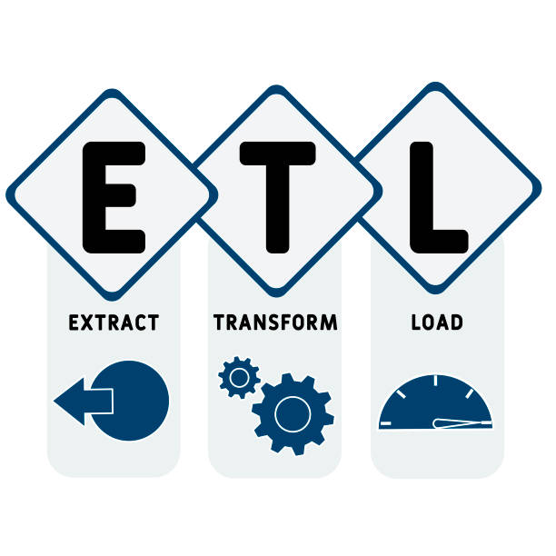
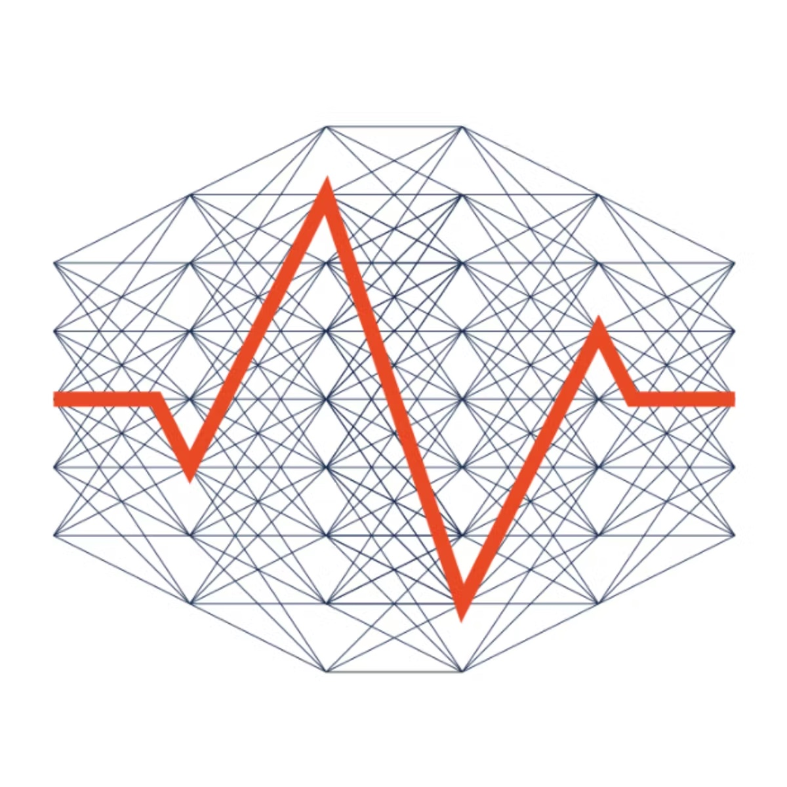

-
Credit Risk Prediction
In this dataset, each entry represents a person who takes a credit by a bank. Each person is classified as good or bad credit risks according to the set of attributes. The link to the original dataset can be found below.
It is almost impossible to understand the original dataset due to its complicated system of categories and symbols. Thus, I wrote a small Python script to convert it into a readable CSV file. Several columns are simply ignored, because in my opinion either they are not important or their descriptions are obscure
K-Means


35.87 seems to be the mean duration and 6911.78 seems to be the mean credit amount of the cluster 1 where we have the riskiest bunch of customers
Hierarchial


41.01 seems to be the mean duration and 8507.35 seems to be the mean credit amount of the cluster 1 where we have the riskiest bunch of customers
DB-Scan


27.66 seems to be the mean duration and 5599.62 seems to be the mean credit amount of the cluster -1 where we have the riskiest bunch of customers
-
CO2 Emission Prediction
The motive is to predict the CO2 emission by a vehicle based on the attributes of the vehicles like Model, Transmission, Fuel type, and Fuel Consumption.
The tailpipe emissions of carbon dioxide (in grams per kilometre) for combined city and highway driving
Evaluation Results

| Method |
Score |
| K-Neighbours Regressor |
0.987 |
| Decision Tree Regressor |
0.858 |
-
Attrition Identification - Classification & Ensemble techniques
Our client is a leading firm and is doing well in the sector. It is recently facing a steep increase in its employee attrition . Employee attrition has gone up from 14% to 25% in the last 1 year . We are asked to prepare a strategy to immediately tackle this issue such that the firm’s business is not hampered and also to propose an efficient employee satisfaction program for long run. Currently, no such program is in place . Further salary hikes are not an option.
Evaluation Results
| Method |
AUC |
Precision |
Recall |
F1 Score |
Accuracy |
| Logistic Regression |
0.717 |
0.221 |
0.641 |
0.328 |
0.653 |
| Decision Trees |
0.584 |
0.221 |
0.641 |
0.328 |
0.653 |
| Random Forest |
0.664 |
0.5 |
0.076 |
0.133 |
0.867 |
| KNN |
0.620 |
0.444 |
0.205 |
0.280 |
0.860 |
KMeans - Silhouette Score (2 clusters) = 0.7079
-
Decision Tree Exercise
This is a decision tree exercise done as a part of the academic work and some of the key business questions are addressed over the process of solving the case.
The Case:
Competitive Auctions on eBay.com. The file eBayAuctions.xlsx contains information on 1972 auctions that transacted on eBay.com between May to June 2004. The goal is to use these data to build a model that will classify auctions as competitive or non-competitive. A competitive auction is defined as an auction with at least two bids placed on the item auctioned. The data include variables that describe the item (auction category), the seller (their eBay rating), and the auction terms that the seller selected (auction duration, opening price, currency, day-of-week of auction close). In addition, we have the price at which the auction closed. The task is to predict whether or not the auction will be competitive.
Evaluation results Predictive performance of the model

-
Movie Review - NLP techniques
This is a Natural Language Processing of a movie using the review by creating a corpus and then classifying it based on the sentiments and then building a word cloud to visualize the sentiments of the movies A novice approach to try and predict the negative and positive reviews of the movie reviews in the corpus using a simple Neural Network approach.
A test accuracy of 90.4% is arrived at the end of the model tuning process
-
Marketing Spend Optimization (In Progress)
Organization: Cymax Group of Technologies, Remote
Process
Cymax aims to reduce and regulate the marketing spend on its products by ensuring every dollar is utilized on the appropriate product campaigns in an effective way
Approach
- Several Product Life Cycle (PLC) steps and Advertising metrics are considered for the hypothesis testing
- Hypothesis: Identification of a product Life cycle stage and a prediction rate for the marketing dollar to be invested
- Historic sales and product data are considered for analysis
Solution/Impact
- A framework which can suggest the PLC phase
- A predictive model that can suggest the amount of money to be invested in the campaign of a product based on the Product Life Cycle and the historic data
- Impact: Hypothesis Testing in progress
Software used: Power BI, Excel, Python
-
Financial Crime Risk Client Rating
Organization: Société Générale Global Solution Center, India
Process
SG wanted to standardize the KYC process across the bank entities and needed to understand the client risk to avoid the regulatory fines that can be imposed due to any suspicious transactions. Any imposition of regulatory fines stands as a loss of revenue from the original stream of operations.
Approach
- A risk rating framework was developed based on the transactional, customer, and geographic data from several regions of the bank. A three-step logistic model is used to coin customers based on their risk possession
- Monitored the data drift and regulatory variations of regions periodically
Solution/Impact
- Built a reusable framework that could generate report to analyze the data drift, Population stability index, and model metrics
- 30% of the influencing factors in the data was identified and fixed
- Impact: Saved 40-man hours per month by creating reusable framework, 30% data drift was identified, and major entities were onboarded to the framework
Software used: SQL, RStudio, Spark, Power BI, Sparklyr
-
SIRON ETL - Remediation
Organization: Société Générale Global Solution Center, India

Process
Transaction Monitoring system has identified some of the issues with the data transported to the SIRON AML tool. The tool was suspicious in its function and based on a UAT test it was identified the tool has some issues with consuming and evaluating the data.
Approach
- The SIRON tool has to be mimicked of its operation and the process has to be evaluated in the manual stream for several suspicious entities of the bank
- The data completeness, conformity has to be evaluated between the Data Warehouse -> ETL tool -> SIRON
Solution/Impact
- A Spark framework was developed based on several interaction with the stakeholders
- Impact: Eight entities of the bank were fixed from the issue
- Impact: A monetary fine upto 90% of the revenue was saved
Software used: SQL, Python, PySpark, Powerpoint
-
Value Based Contract
Organization: Mu Sigma Business Solutions, India
Process
As a further step to improve the potential of a successful drug, a pharma manufacturer undergoes a contract with a service provider to include the drug in the insurance plans. The drug has to pass certain metric to prove that it is the market leader among all other competitors in its therapeutic area.
Approach
- Claims data is used in this process where we have tried to identify the patients belonging to the class. An effective drug cures the disease and has less adverse effects.
- The time taken to develop an adverse effect is incidence rates. Some KPIs that can affect the incidence rates are patient characteristics.
Solution/Impact
- We have reported and conducted several analysis using SAS and proved that the drug is a significant winner to sign the contract. An adjusted analysis is also conducted using Propensity scores.
- Impact: Signed the contract after several iterations.
- Impact: 30+ sensitivity analysis is conducted for robust results
Software used: SQL, Python, SAS, Excel
-
Market Trend Analysis
Organization: Mu Sigma Business Solutions, India

Process
One of the top biologics in the firms immunoscience domain needed a market evaluation to help further business decisions related to marketing and manufacturing.
Approach
- Patient selection was conducted based on the characteristic using ML classification techniques.
- Evaluated pharma metrics that are specific to the drug across its competitors.
Solution/Impact
- Reported suitable metrics as a Tableau dashboard and explained the business of the dropping sales.
- Impact: Efficient spend on the future scope of the drug has been planned accordingly.
- Impact: The decline in the market was reported to make necessary manufacturing decisions.
Software used: SQL, Python, SAS, Tableau